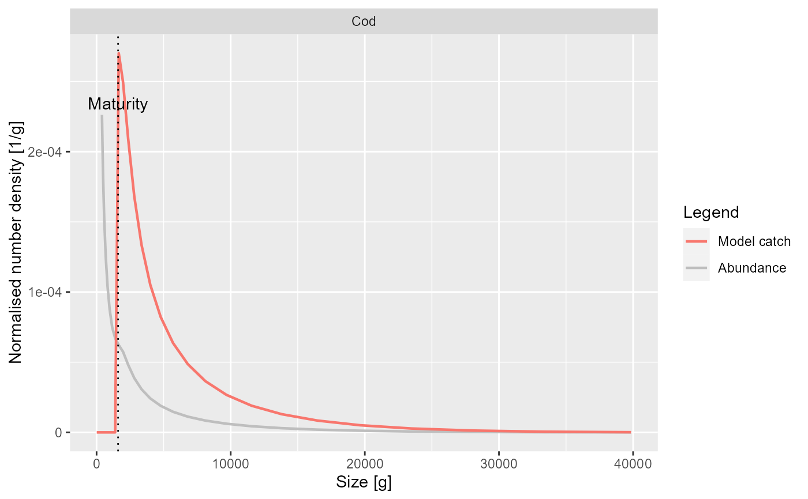

Plots the normalised number density of the catch for a species as a function
of either length or weight. In addition to the catch in the model, also the
observed catch will be plotted if it is supplied via the catch argument.
Also superimposes a plot of the number density of all individuals of the
species.
An object of class MizerSim or MizerParams.
The name of the predator species for which to plot the mortality.
Optional. Data frame holding binned observed catch data. The data can
be binned either into length bins or weight bins. In the former case the data
frame should have columns length and dl holding the start of
the size bins in cm and the width of the size bins in cm respectively. In
the latter case the data frame should have columns weight and
dw holding the start of the size bins in grams and the width of the
size bins in grams. The data frame also needs to have the columns
species (the name of the species), catch (the number of
individuals of a particular species caught in a size bin).
Determines whether to show the size distribution of the catch as a function of weight ("Weight") or as a function of length ("Length"). Default is "Weight".
A boolean value that determines whether the formatted data used for the plot is returned instead of the plot itself. Default value is FALSE
Other arguments (currently unused)
A ggplot2 object, unless return_data = TRUE, in which case a list
composed of two slots is returned. First slot is a data frame with the four
variables 'w' or 'l' (depending on x_var), 'Catch density', 'Type', 'Species
and the second slot is a data frame with the four variables 'w_mat',
'Species', 'y_coord', 'Type' (to plot vertical lines).
plotting_functions
Other plotting functions:
plotDeath(),
plotEnergyBudget(),
plotResourcePred(),
plotResource(),
plotYieldVsF()
# \donttest{
plotYieldVsSize(NS_params, species = "Cod")

# Returning the data frame
fr <- plotYieldVsSize(NS_params, species = "Cod", return_data = TRUE)
str(fr)
#> List of 2
#> $ :'data.frame': 73 obs. of 4 variables:
#> ..$ w : num [1:73] 14 16.7 19.9 23.8 28.4 ...
#> ..$ Catch density: num [1:73] 0 0 0 0 0 0 0 0 0 0 ...
#> ..$ Type : chr [1:73] "Model catch" "Model catch" "Model catch" "Model catch" ...
#> ..$ Species : Factor w/ 12 levels "Sprat","Sandeel",..: 11 11 11 11 11 11 11 11 11 11 ...
#> $ :'data.frame': 1 obs. of 4 variables:
#> ..$ w_mat : int 1606
#> ..$ Species: Factor w/ 12 levels "Sprat","Sandeel",..: 11
#> ..$ y_coord: num 0.00027
#> ..$ Type : logi NA
# }